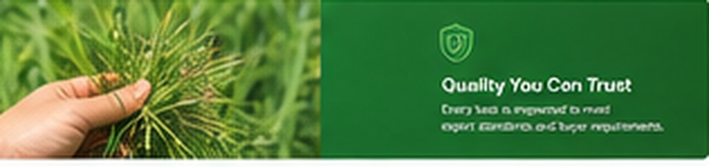

Our commitment to delivering export-grade Rhodes Grass hay with consistent specifications and reliability.
From farm selection through to shipment, we maintain strict quality controls to ensure every bale of Rhodes Grass meets export standards and buyer expectations.
We partner with reliable farms that maintain quality Rhodes Grass crops. Harvesting is timed for optimal maturity, ensuring good nutrition content and proper moisture levels.
Hay is dried to 8-12% moisture content, reducing spoilage risk and ensuring safe, long-term storage during export shipments to Saudi Arabia, UAE, and other destinations.
Dried grass is conditioned, baled, and packaged according to buyer preferences. Bales are protected during handling and transportation to maintain cleanliness and prevent degradation.
Each batch undergoes visual inspection for color, debris, mold, and foreign material. Samples are checked for smell, texture, and overall quality before approval for shipment.
Complete export documentation is prepared, including product specifications, quality certificates, and destination support. View available buyer resources →

Consistent quality hay means better animal nutrition, reduced feed waste, and reliable outcomes for your dairy or livestock operation. You can depend on our Rhodes Grass every time.
Every bale meets international export specifications for cleanliness, moisture, and nutritional content.
Each shipment is carefully matched for quality, color, and specifications so your livestock get consistent nutrition.
We provide documentation, quality certificates, and buyer support to ensure smooth customs and handling at destination.